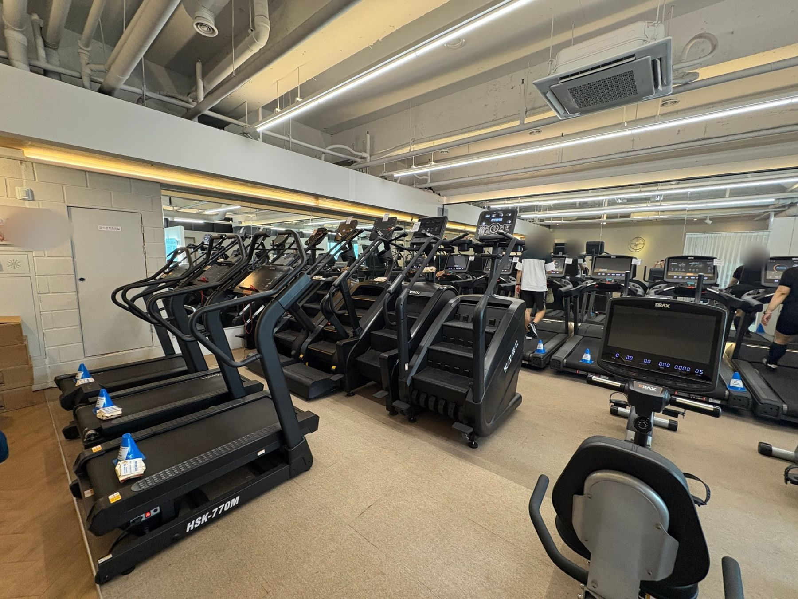
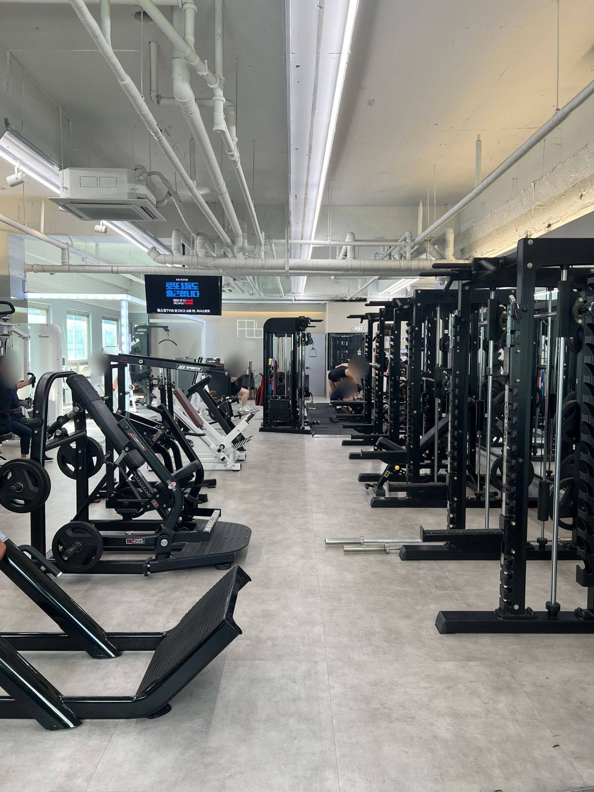
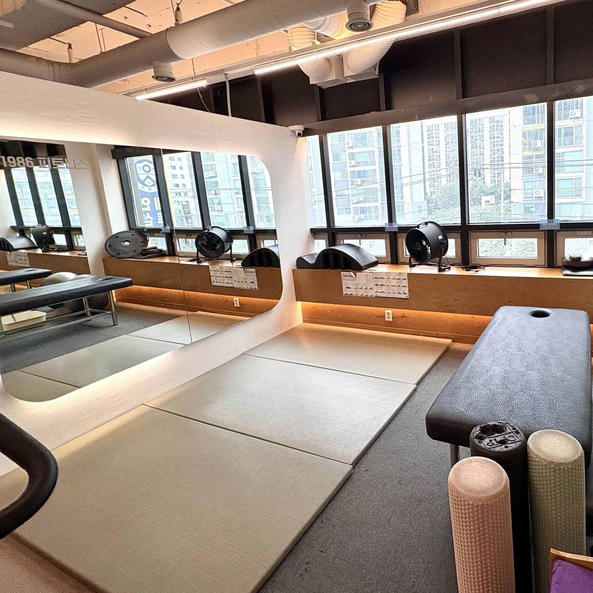

가양역 6 · 7번 출구 바로 앞
가양역 헬스장 · 24시간 운영 1986피트니스 가양점역에서 나오면,
가양역 헬스장 · 24시간 운영 1986피트니스 가양점역에서 나오면,
바로 운동.
EXIT 6·7가양역 출구 바로
24 HOURS24시간 헬스장
4H FREE주차 4시간 무료
CARDIO ZONE01 / 06
CENTER TOUR
영상으로
영상으로
먼저 둘러보세요.
유산소 존부터 샤워부스까지, 가양역 헬스장 1986피트니스 가양점의 안쪽을 영상 한 편에 담았어요.
러닝머신 9대천국의 계단 5대 완비
덤벨 최대 45kg케틀벨 최대 16kg
노틸러스 상체 4종싸이벡스 하체 2종 입고
개인 샤워부스1인 독립 부스
전 기구 QR 사용법처음이어도 쉽게
스트레칭 존마사지 베드 구비
01 — NEWS
네이버 플레이스 소식 전체보기 ↗
가양점 소식
NEW너틸러스 상체 기구 4대 입고 완료2026.10.14
EVENT오픈 6주년 감사 이벤트 진행 중
NOTICE매월 둘째 일요일 정기휴무 안내
HOURS24시간 운영 · 주차 4시간 무료
02 — COACHING TEAM
1986피트니스 가양점
1986피트니스 가양점
트레이너를 소개합니다.


03 — PT REVIEWS
먼저 받아본 회원들의
네이버 플레이스 후기 전체보기 ↗
먼저 받아본 회원들의
PT 후기입니다.
네이버 플레이스에 올라온 실제 후기를 그대로 옮긴 내용입니다.
※ 후기는 회원님 개인의 경험이며, 운동 효과와 체형 변화는 운동 기간·생활 습관 등에 따라 개인차가 있습니다.
04 — CONTACT & VISIT
찾아오시는 길,
찾아오시는 길,
문의 방법
ADDRESS서울 강서구 양천로 500
노블리움오피스텔 307 · 308호 (3층)
노블리움오피스텔 307 · 308호 (3층)
SUBWAY9호선 가양역 6 · 7번 출구 바로
HOURS24시간 운영 · 매월 둘째 일요일 휴무
PARKING4시간 무료
무료체험 · PT 예약하기
네이버 예약에서 원하는 트레이너와 시간을 직접 고르실 수 있습니다.

05 — Q&A
자주 묻는 질문
더 궁금한 점은 네이버 톡톡이나 카카오톡 채널, 전화 02-2658-5607 로 문의해 주세요.
가양역 헬스장 1986피트니스 · 6 · 7번 출구 바로 앞
1986FITNESS
GAYANG
가양역 헬스장 1986피트니스 가양점 · 서울 강서구 양천로 500 노블리움오피스텔 307 · 308호 · 02-2658-5607 · © 1986 FITNESS GAYANG
GAYANG